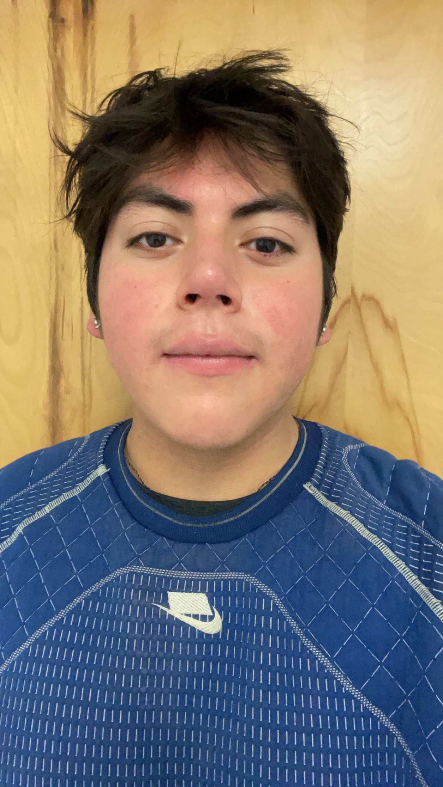

Standing in front of the bathroom door in Cameron.
Personal Background: I am from east LA, born in LA county.
Professional Background: Tutoring in writing for 2 years and TA’ing in computer science for 1 year.
Academic Background: Junior in Computer Science with a concentration in software engineering. Before starting my journey in computer science I studied and performed classical and jazz music on flute, saxophone and clarinet.
Background in this Subject: I was in my highschools robotics team for all 4 years mostly building parts with some programming.
Primary Computer Platform: 2020 Macbook pro.
Courses I'm Taking & Why:
ITSC 3146 Intro to Operating Systems & Networking - I like the instructor for the course
ITIS 3135 Web App Design and Development - Core course for the software engineering concentration
ITSC 3688 Computers and Their Impact on Society - Required course for computer science
CLAS 3000 Topics in Arts and Sciences - This course is part of the North Carolina Louis Stokes Alliance for Minority Participation, a National Science Foundation funded program designed to assist universities and colleges in diversifying the nations science, technology, engineering and mathematics (STEM)
MATH 2164 Matrices and Linear Algebra - Required math for the software engineering concentration
Funny/Interesting Item to Remember Me by: I have a common name with an uncommon spelling.
I'd also like to Share: My last name means lion in spanish.